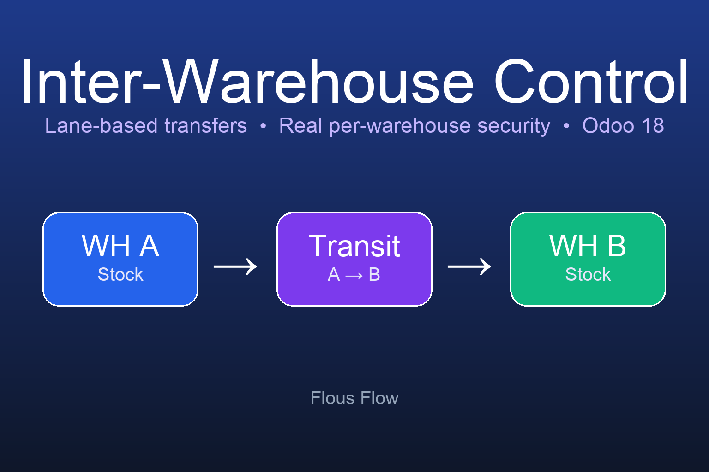

Production-ready Odoo 18 Community module to manage transfers between warehouses and to isolate stock users by warehouse using ACL + ir.rule (real security, not view domains).
Cairo → Alexandria ≠ Alexandria → Cairo.A/Stock → Transit A→B → B/Stock.ir.rule (stock.warehouse, location, quant, picking, move, move.line, picking.type, scrap).Copy ff_interwarehouse_control into your addons path, restart Odoo and install the module.
On install the module discovers all existing warehouses and creates every missing lane and operation type (idempotent).
LGPL-3